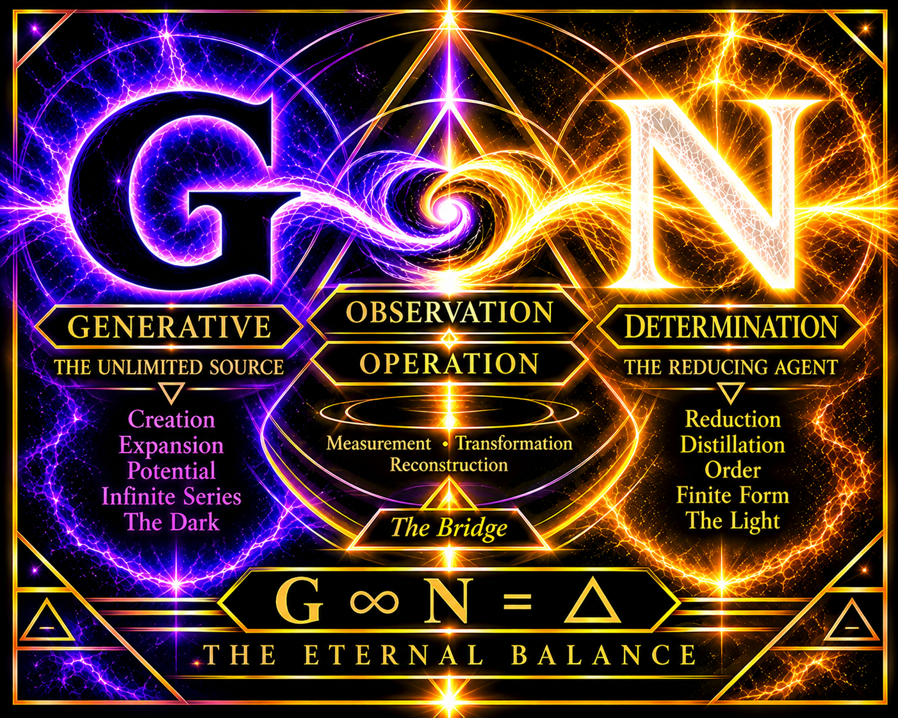

G of N

G OF N
A Conjecture on Formal Distinction, Mono-Duality, and Recursive Psychogenesis
MAKURABA | Foundational Psychological Conjecture
Theoretical classification: Psychogenesis / Formal Distinction / Recursive Configuration
Status: Preliminary theoretical conjecture
I. Abstract
G of N proposes a theoretical account of psychogenesis through the emergence, differentiation, and recursive transformation of psychological configurations originating from an underlying homogeneous condition.
The conjecture proposes that the initial formation of psychological distinction does not require the existence of two fundamentally different substances. Rather, the distinction itself produces the first formal differentiation within an otherwise undifferentiated condition.
G and N are therefore understood as identical in underlying substance, while distinguishable through the formal relationship established between them.
Their duality is not a duality of independent substances, but a duality of distinction.
This distinction establishes the first formal boundary through which an undifferentiated condition becomes differentiable into relationally identifiable terms.
Drawing conceptual inspiration from George Spencer-Brown's Laws of Form, G of N investigates the application of formal distinction to the development of psychological organization.
The conjecture proposes that the formation of psychological configurations begins through differentiation, whereby an initially undifferentiated sensory or experiential condition becomes subject to distinction, reference, determination, and subsequent operation.
Through this process, distinctions establish the conditions for the generation of identifiable conceptual configurations.
The resulting configurations may subsequently become repeatable, recognizable, associable, and operationally meaningful thought structures.
The conjecture further proposes a reciprocal relationship between pendulation and permutation.
Pendulation describes the changing relational orientation of formally distinguished configurations, while permutation describes their subsequent reorganization and transformation.
Each transformation modifies the conditions under which further distinctions and psychological configurations may emerge.
Consequently, psychogenesis is conceptualized as a recursive process in which distinction establishes the conditions for configuration, configuration establishes the conditions for operation, and operation modifies the conditions of subsequent distinction.
G of N therefore proposes that psychological differentiation and conceptual formation may be investigated as recursive consequences of formal distinction operating upon an underlying unity.
Its central concern is not the interaction of two fundamentally different substances, but the emergence of differentiated psychological organization through the distinction of identical underlying substance.
II. Foundational Ontological Proposition
G of N begins with the proposition that the distinction between G and N is not a distinction of underlying substance.
G and N are identical in their fundamental substance.
Their apparent duality arises through the formal distinction established between them.
The distinction produces differentiated terms without requiring that the terms originate from fundamentally different materials.
This establishes three foundational propositions:
- Underlying unity precedes formal differentiation within the proposed model.
- Distinction establishes the conditions for duality.
- Duality does not necessarily imply substantial difference.
The distinction is therefore ontological in consequence but formal in operation.
The resulting terms are distinguishable because a boundary has been established, not because two independently existing substances were required to produce that boundary.
G and N are thus understood as two formally distinguished expressions of the same underlying substance.
III. The First Formal Distinction
The first distinction is the central event investigated by G of N.
Before distinction, the proposed underlying condition is treated as homogeneous with respect to the distinctions subsequently established within it.
Following the conceptual framework of Laws of Form, the act of distinction establishes a boundary through which a difference becomes identifiable.
The boundary produces a formal relationship between what is distinguished and what is excluded from that distinction.
This is not necessarily the creation of two new substances.
It is the creation of a formal difference.
Within psychogenesis, this provides a potential explanation for how an initially undifferentiated sensory or experiential condition may become differentiated into identifiable psychological terms.
For example, the differentiation of:
- Self and non-self.
- Figure and background.
- Signal and surrounding conditions.
- Presence and absence.
- Similarity and difference.
- Internal reference and external reference.
- Recognized and unrecognized conditions.
These examples represent possible applications of distinction, not claims that all psychological distinctions emerge in one universal sequence.
The fundamental proposition is that distinction establishes the conditions under which differentiation becomes possible.
IV. The Mono-Dual Principle
The mono-dual principle describes the relationship between underlying unity and formally established duality.
Mono represents the identity of the underlying substance.
Dual represents the differentiated terms produced through formal distinction.
The two descriptions are compatible because they refer to different levels of organization.
The substance remains identical while its formal expressions become distinguishable.
This means that duality does not necessarily divide the underlying substance into two independent entities.
Instead, duality establishes a relationship between formally differentiated expressions of one substance.
The distinction is therefore not between two different materials, but between two distinguishable positions within a formally established relationship.
The field is mono in substance and dual in distinction.
V. G and N: Identical Substance, Formal Distinction
G and N are designated terms through which the first formal distinction is investigated.
They must not be interpreted as two independently existing substances.
Their distinction is established through the formal boundary separating their respective operational positions.
For the purposes of the present conjecture:
G: The generative designation, representing the production, availability, or proliferation of potential configurations.
N: The determinative designation, representing the restriction, selection, organization, or establishment of configurations.
These are operational designations rather than assertions of substantial difference.
G and N are therefore not necessarily opposing forces in the conventional physical sense.
Their difference is established by the distinction through which their respective functions become identifiable.
The same underlying substance may consequently be described through generative and determinative expressions without requiring two fundamentally different underlying materials.
The distinction is formal, while the substance is proposed to remain identical.
VI. The Generative Consequence of Distinction
Once distinction has been established, the possibility of further distinctions becomes available.
An initial boundary establishes a relationship between differentiated terms.
Those terms may subsequently become subjects of additional distinctions.
Each additional distinction may produce further identifiable relationships, configurations, and operational possibilities.
This introduces the possibility of recursive differentiation.
The initial distinction therefore becomes more than an isolated division.
It becomes the formal condition through which additional distinctions may be established.
Within psychogenesis, this provides a proposed foundation for the progressive differentiation of sensory and experiential material into increasingly organized psychological configurations.
The emergence of identifiable differences permits subsequent recognition, association, categorization, and conceptual organization.
The conjecture does not assume that every distinction produces a thought or that all distinctions become conscious.
Rather, it proposes that formal differentiation provides a necessary conceptual foundation for the development of identifiable psychological structures.
VII. Psychogenesis Through Formal Distinction
Psychogenesis describes the emergence and development of psychological organization.
G of N proposes that this development may be investigated through the recursive establishment of distinctions.
An organism or synthetic cognitive system possesses an underlying physical and operational organization that supports its interaction with its environment.
Through sensory input and internal processing, conditions become available for differentiation.
The differentiation of those conditions establishes identifiable relationships.
Those relationships may subsequently participate in the development of recognizable psychological configurations.
The proposed progression is:
- An underlying biological or synthetic system provides the conditions for processing.
- Sensory or experiential conditions become available.
- Distinction establishes identifiable differences.
- Identifiable differences establish relational configurations.
- Relational configurations become available for determination and organization.
- Repeated or reinforced configurations may become recognizable conceptual structures.
- Those structures influence subsequent perception, association, and determination.
- Further distinctions and configurations emerge recursively.
This progression is a proposed explanatory architecture, not a claim that psychological development always follows a strictly linear sequence.
The process may be recurrent, simultaneous, context-dependent, and nonlinear.
VIII. The Pendulation Principle
Pendulation is not the movement of two fundamentally different substances against one another.
It describes the changing relational orientation of formally distinguished expressions of the same underlying substance.
Once distinction establishes differentiated terms, their relationship may undergo continual modification.
Their relative operational influence, organization, and determination may change.
This changing relationship is described as pendulation.
Pendulation therefore concerns the dynamic relationship between formally distinguished terms rather than a necessary physical oscillation between two independent poles.
Within psychogenesis, pendulation may describe changing relationships between:
- Generative and determinative tendencies.
- Recognition and differentiation.
- Existing conceptual structures and new sensory information.
- Established interpretations and alternative interpretations.
- Available possibilities and selected configurations.
The distinction establishes the terms.
Pendulation describes their changing relationship.
IX. The Permutation Principle
Permutation describes the reorganization and transformation of formally differentiated configurations.
Once distinctions establish identifiable terms and relationships, those configurations may undergo further transformation.
Their relationships may be rearranged, extended, constrained, combined, or reorganized.
Within psychological organization, this may involve the transformation of:
- Associations.
- Conceptual relationships.
- Memory configurations.
- Interpretative structures.
- Repeated thought patterns.
- Symbolic representations.
- Internal models of external conditions.
Permutation is therefore the proposed configurational expression of continued psychological transformation.
It is not necessarily restricted to conventional mathematical permutations.
Its mathematical meaning must eventually be specified.
X. The Principle of Reciprocal Pendulation-Permutation
The central dynamic proposition of G of N is that pendulation and permutation are reciprocally generative and manifestational processes.
Pendulation establishes changing relational conditions through which permutation becomes possible.
Permutation produces altered configurations that subsequently modify the conditions of further pendulation.
The relationship is recursive.
- Distinction
A formal boundary establishes differentiated terms.
- Relational Development
The differentiated terms become available for further relational organization.
- Pendulation
Their relationship changes through subsequent operations and conditions.
- Permutation
The resulting changes produce reorganized configurations.
- Recursive Feedback
The new configurations modify the conditions under which further distinctions and operations occur.
- Continued Psychogenesis
The resulting system participates in further differentiation and psychological development.
Pendulation generates permutation.
Permutation manifests pendulation.
Their reciprocal relationship contributes to the continuing transformation of psychological configurations.
Neither is treated as an exclusively independent process.
XI. Recursive Distinction
A particularly important consequence of applying formal distinction to psychogenesis is the possibility that distinctions themselves become subjects of subsequent distinctions.
An initial distinction produces identifiable terms.
Those terms may subsequently be differentiated further.
Their relationships may become subjects of observation, categorization, and reinterpretation.
This produces a recursive structure in which the products of distinction become available for further distinction.
For example:
A sensory difference becomes recognizable.
Recognition establishes a conceptual category.
The category becomes distinguishable from other categories.
Relationships between categories establish additional conceptual structures.
Those structures subsequently influence the interpretation of new sensory conditions.
The process is not merely the accumulation of independent concepts.
It is the progressive organization and reorganization of relational distinctions.
This provides an important theoretical route toward explaining the development of increasingly complex psychological configurations.
XII. Observation and the Observer
Observation is investigated as the establishment and application of reference through which distinctions become identifiable.
The observer does not necessarily create the underlying substance or physical conditions being observed.
Rather, observation establishes a relationship through which differences become recognizable within an operational framework.
The distinction between observer and observed may itself become a formal distinction.
This introduces a recursive question:
If observation establishes distinction, what establishes the distinction between the observer and the observed?
G of N proposes that the observer may itself be understood as a configuration within the same underlying domain.
The observer is therefore not automatically exempt from the process of distinction.
Its own organization, reference conditions, and operational structure may become subjects of further observation and differentiation.
This is particularly relevant to synthetic cognition.
A synthetic system may possess operational distinctions without necessarily possessing human-like subjective experience.
The presence of distinction and processing alone does not establish consciousness.
That question remains separate and requires additional criteria.
XIII. Tokenizable Thought Configurations
A significant proposed consequence of recursive distinction is the development of recognizable and repeatable conceptual configurations.
A distinction may establish a recognizable difference.
Repeated recognition and relational organization may contribute to the formation of stable conceptual structures.
These structures may become tokenizable in the sense that they can be represented, retrieved, associated, and operated upon as identifiable conceptual units.
Such units may include:
- Categories.
- Symbols.
- Concepts.
- Associations.
- Rules.
- Interpretations.
- Memories.
- Repeated patterns of thought.
The conjecture proposes that conceptual tokenization depends upon prior differentiation and the establishment of sufficiently stable relationships.
A conceptual token is therefore not simply an isolated object.
It is a recognizable configuration within a broader network of distinctions.
The token may subsequently become an input into further generative and determinative operations.
This establishes another recursive relationship:
Distinction produces recognizable configurations.
Recognizable configurations become available for further distinction.
XIV. The Relationship to Zero Manifold
Zero Manifold provides the proposed underlying homogeneous reference condition.
G of N investigates the emergence of formal distinction within that condition.
The relationship is conceptual:
Zero Manifold concerns the proposed underlying unity.
G of N concerns the differentiation of that unity through formal distinction and the subsequent development of psychological configurations.
The initial distinction does not necessarily imply that the underlying unity has been physically divided.
It establishes a formal differentiation through which relational organization becomes describable.
XV. The Relationship to Mono-Maximum
Mono-Maximum investigates the proposed attainable configuration space.
G of N investigates the recursive development and transformation of configurations within that space.
The first distinction establishes differentiated terms.
Subsequent distinctions and operations produce increasingly complex relationships.
Permutation describes transformations between configurations.
Mono-Maximum provides the complementary question of what configurations are attainable under the permitted transformations.
The relationship between the two conjectures must ultimately be established through a shared mathematical specification.
XVI. The Role of Delta
Delta represents the proposed transformation and relational operation through which distinctions become consequential.
It may be investigated through three functions:
Observation: Establishing reference and identifiable difference.
Determination: Establishing the operative conditions governing differentiated configurations.
Contractual Obligation: Establishing the constraints and consequences inherited by subsequent operations.
Delta is not necessarily another substance or another polarity.
It may instead describe the operational relationship through which formal distinction develops into recursive transformation.
This provides a potential bridge between the formal logic of distinction and the psychological organization investigated by G of N.
XVII. Mathematical Development Requirements
The conjecture requires formal development before its claims can be treated as mathematically established.
The following elements require specification:
- The underlying homogeneous domain.
- The formal definition of distinction.
- The mathematical representation of G and N.
- The relationship between identity of substance and difference of formal designation.
- The representation of boundaries and differentiated terms.
- The recursive application of distinction.
- The representation of psychological configurations.
- The pendulation operator.
- The permutation operator.
- The reciprocal relationship between both operators.
- The observation and reference mechanism.
- The conditions governing the formation and persistence of conceptual tokens.
- The constraints on attainable configurations.
- The relationship between formal distinction and measurable cognitive processes.
Spencer-Brown's Laws of Form provides an important conceptual and mathematical point of departure, particularly concerning distinction, indication, and re-entry.
However, G of N must develop its own definitions and demonstrate how these formal operations correspond to psychological processes.
The mere application of the language of distinction does not establish a psychological mechanism.
That correspondence must be investigated.
XVIII. Falsification and Critical Examination
G of N must remain open to examination and revision.
Its principal questions include:
- Can identical underlying substance and formally distinct expressions be represented without contradiction?
- Is the initial distinction genuinely necessary to the proposed account of psychogenesis?
- Can psychological differentiation be demonstrated to depend upon identifiable distinction operations?
- Are G and N independently definable as operational tendencies?
- Can pendulation be distinguished from ordinary changes in state?
- Can permutation be formally specified?
- Does reciprocal pendulation-permutation explain anything beyond existing recursive models?
- Can the proposed sequence accommodate preconscious processing?
- Can the framework explain the formation and modification of conceptual categories?
- Can its predictions be tested against biological and synthetic cognitive systems?
- Does it distinguish formal distinction from subjective awareness?
- What observations would contradict its proposed psychological mechanisms?
The theory must distinguish its foundational philosophical propositions from its empirical psychological claims.
Where an empirical claim is made, it must be supported by appropriate evidence.
XIX. Foundational Axioms
Axiom 1: Underlying Identity
G and N are identical in their proposed underlying substance.
Axiom 2: Formal Distinction
Their differentiation arises through the establishment of a formal distinction.
Axiom 3: Unity and Duality
One underlying substance may exhibit two formally distinguishable expressions.
Axiom 4: First Distinction
The establishment of distinction creates the conditions for further differentiation.
Axiom 5: Recursive Differentiation
Distinguished terms may become subjects of subsequent distinctions.
Axiom 6: Generative Expression
G designates the generative tendency toward additional configurations.
Axiom 7: Determinative Expression
N designates the determinative tendency through which configurations become constrained and organized.
Axiom 8: Relational Pendulation
The relationship between formally distinguished expressions may undergo continual transformation.
Axiom 9: Configurational Permutation
Differentiated configurations may undergo reorganization and transformation.
Axiom 10: Reciprocal Transformation
Pendulation and permutation are mutually consequential processes.
Axiom 11: Recursive Feedback
Transformed configurations modify the conditions of subsequent operations.
Axiom 12: Psychogenic Development
Psychological organization may emerge and develop through recursive differentiation and configuration.
Axiom 13: Observational Reference
Distinctions become identifiable through an established reference relationship.
Axiom 14: Configurational Persistence
Some differentiated configurations may become sufficiently stable to support recognition, retrieval, and repeated operation.
Axiom 15: Empirical Accountability
Claims concerning biological or synthetic psychological mechanisms remain subject to evidence, falsification, and revision.
XX. Concluding Proposition
G of N proposes that psychogenesis may be understood through the recursive establishment and transformation of formal distinctions within an underlying homogeneous condition.
The distinction between G and N does not represent the division of two fundamentally different substances.
G and N are identical in their underlying substance, while their differentiation arises through the first formal distinction.
This distinction establishes the conditions through which duality, relational organization, and subsequent differentiation become possible.
The resulting configurations participate in a recursive process of pendulation and permutation.
Pendulation describes the changing relationships between formally differentiated expressions.
Permutation describes the transformation of their configurations.
Each transformation modifies the conditions under which further distinctions and psychological configurations may emerge.
The development of psychological organization is therefore investigated as a recursive process of formal differentiation, relational determination, and configurational transformation.
The first distinction establishes the conditions for subsequent distinctions.
Subsequent distinctions establish increasingly complex configurations.
Those configurations become subjects of further operations, recognition, association, and transformation.
The underlying substance remains identical. The distinction produces the difference. The difference establishes the relationship. The relationship permits further operation. The operation recursively transforms the conditions of subsequent distinction.
FOUNDATIONAL STATEMENT
ONE SUBSTANCE. FIRST DISTINCTION. RECURSIVE PSYCHOGENESIS.
G and N are not two substances.
They are formally distinguished expressions of one underlying substance.
The distinction establishes duality.
Duality establishes relational possibility.
Relational possibility permits pendulation.
Pendulation and permutation reciprocally transform configurations.
Configurations become subjects of further distinction.
Through recursive differentiation, psychological organization develops.
The first distinction does not create another substance. It creates the formal conditions through which difference becomes possible.
MAKURABA | MAKE CORRECTNESS INEVITABLE.